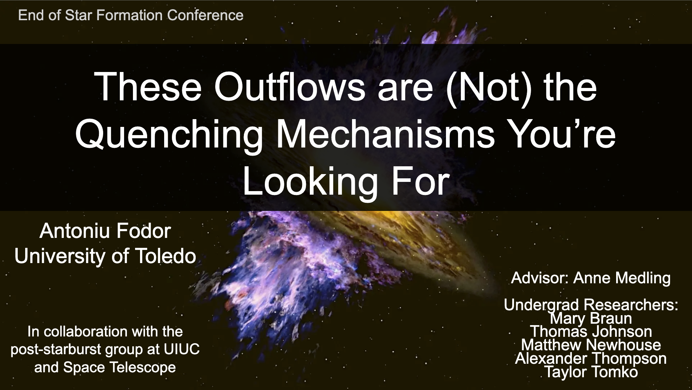
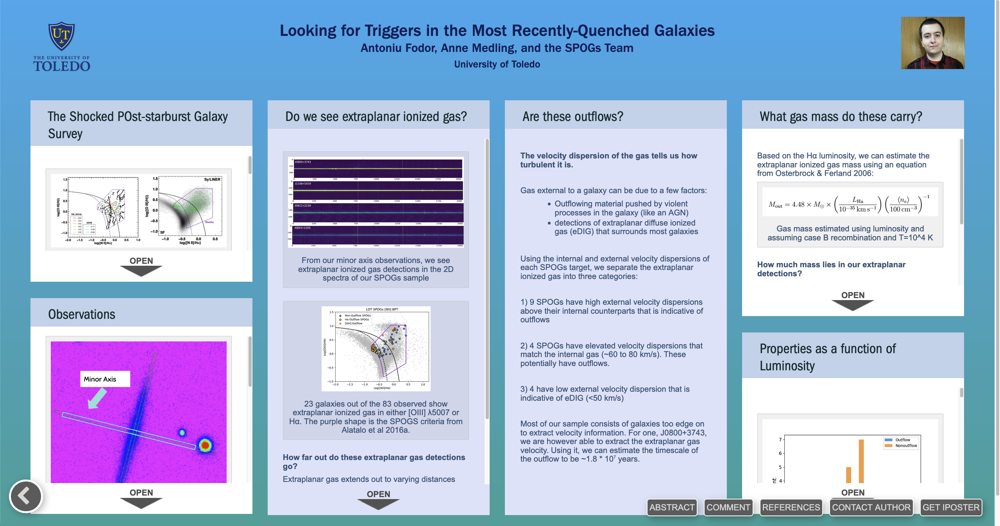
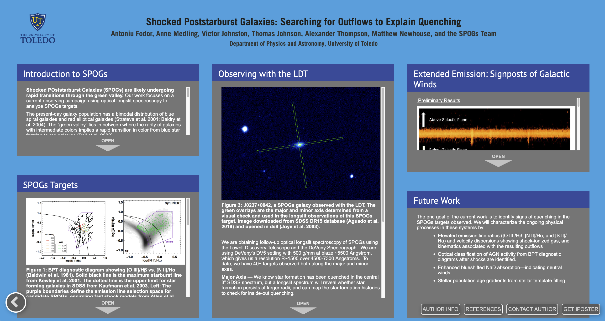

Conference Presentations
2026

These Outflows are (Not) the Quenching Mechanisms You're Looking For
The End of Star Formation Conference, Mar. 2026
2025

A Minor (and Major) Search for Quenching: Optical Long-slit Spectroscopy of Shocked POst-starburst Galaxies
American Astronomical Society Meeting #245, Jan. 2025
2024

The Shocked POststarburst Galaxy Survey: Outflows in Shocked Post-Starburst Galaxies Are Not Responsible For Quenching
UIUC - Cardiff Galaxy Meeting, Jul. 2024

Looking for Triggers in the Most Recently-Quenched Galaxies
American Astronomical Society Meeting #243, Jan. 2024

Testing Inside-Out Quenching: Mapping Star Formation in AGN Shutting It Down
American Astronomical Society Meeting #243, Jan. 2024
2022

Optical Spectroscopy of Shocked Post-Starburst Galaxies in Search of Outflow and Quenching Signatures
American Astronomical Society Meeting #240, Jun. 2022
2021

Shocked Poststarburst Galaxies: Searching for Outflows to Explain Quenching
American Astronomical Society Meeting #237, Jan. 2021